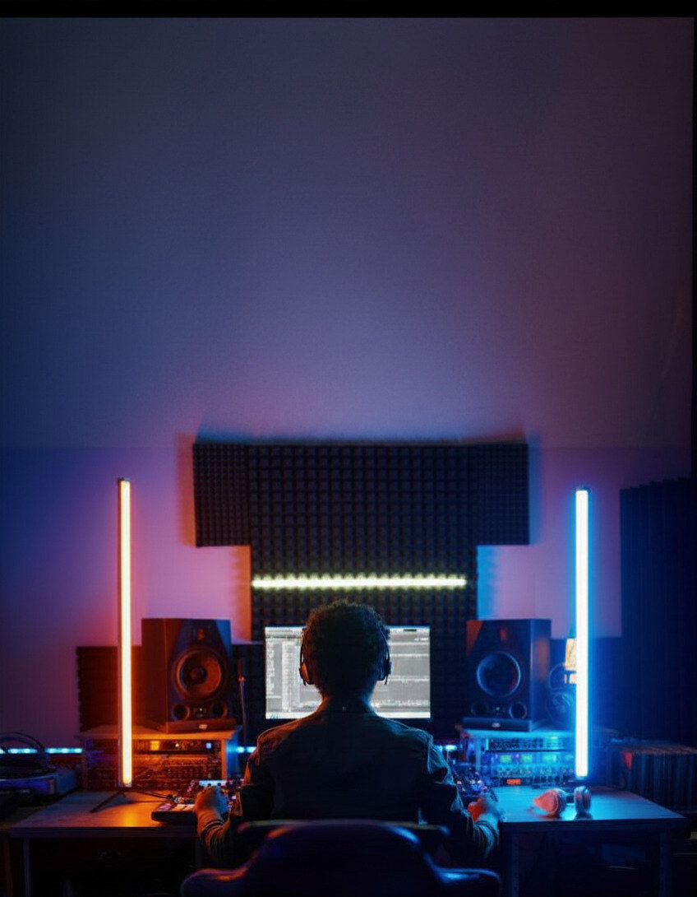

Vem conferir essa novidade →
O Instagram lançou o Features, um formato para vídeos longos e horizontais. Podcasts, entrevistas, vlogs, programas. Exatamente o que ele dizia que nunca iria priorizar.
Ou seja: o Instagram foi atrás do território do YouTube.

O Reel agora pode virar só o trailer: o Instagram testa conectar vários Reels a um único vídeo completo, usando o curto como isca para o longo. A disputa saiu do celular e chegou à TV.
A ambição é clara: o tempo que você passa no sofá.
Existe algo que o Instagram não copia com um botão novo — e é o que mantém o YouTube na frente.
No YouTube as pessoas entram com intenção clara. Quem chega quer conteúdo. E isso é ouro para quem produz.
No Instagram, o conteúdo tem algumas horas de vida antes de sumir no feed. No YouTube, um vídeo de três anos atrás ainda aparece na busca e ainda é recomendado.
Instagram: você produz para hoje. YouTube: constrói um acervo que trabalha por você.
segundo maior site de buscas do mundo, atrás só do Google.
Seu conteúdo é achado por quem está realmente interessado, não por quem só passou por ele sem querer.
Ser achado por intenção vale mais do que ser visto por acaso.
anos de formato de vídeo construído pelo YouTube — e todo mundo corre atrás dele.
Copiar o formato é fácil. Difícil é ter:
E isso não se lança da noite para o dia.
Enquanto as outras plataformas tentam alcançar, a gente já vive e domina o YouTube todos os dias.
Se você leva seu conteúdo a sério, salva esse post e compartilha com quem precisa entender onde vale a pena construir de verdade.